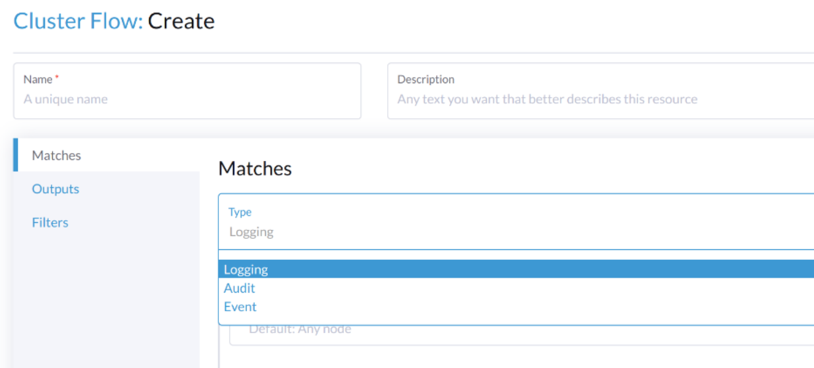

ログ記録
`Harvester Cluster`で何が起こっているか、または起こったかを知ることは重要です。
Harvester`は、クラスターが電源オンされた直後に`cluster running log、kubernetes audit、および`event`のログを収集し、監視、ログ記録、監査、トラブルシューティングに役立ちます。
`Harvester`は、これらのログをさまざまなタイプのログサーバーに送信することをサポートしています。
|
ログデータのサイズは、クラスターのスケール、ワークロード、およびその他の要因に関連しています。`Harvester`は、クラスター内にログデータを保存するために永続ストレージを使用しません。ユーザーは、ログを受信するためにログサーバーを設定する必要があります。 |
ログ記録機能は現在アドオンとして実装されており、新しいインストールではデフォルトで無効になっています。
ユーザーは、インストール後にHarvester UIから`rancher-logging` アドオンを有効または無効にすることができます。
ユーザーは、設定ファイルをカスタマイズすることで、Harvesterインストール内の`rancher-logging`アドオンを有効または無効にすることもできます。
バージョンv1.1.xからアップグレードされたHarvesterクラスターでは、ログ記録機能が自動的にアドオンに変換され、以前と同様に有効のまま保持されます。
上位レベルのアーキテクチャ
HarvesterとRancherの両方は、内部ログインフラストラクチャの特定のコンポーネントと操作を管理するために Logging Operatorを使用します。

Harvesterの実践では、Logging、Audit、および`Event`が1つのアーキテクチャを共有し、`Logging`がインフラストラクチャであり、`Audit`と`Event`がその上にあります。
ログ記録
Harvesterのログインフラストラクチャは、Harvesterのログを Graylog、 Elasticsearch、 Splunk、 Grafana Lokiなどの外部サービスに集約することを可能にします。
収集されたログ
収集されたログのリストは以下の通りです：
-
すべてのクラスター`Pods`からのログ
-
各`node`からのカーネルログ
-
各ノードからの選択されたsystemdサービスのログ
-
rke2-server -
rke2-agent -
rancherd -
rancher-system-agent -
NetworkManager -
iscsid
-
|
ユーザーは、集約されたログが送信される場所を構成および変更できるほか、基本的なフィルタリングも行えます。どのログが収集されるかを変更することはサポートされていません。 |
ログリソースの設定
ログオペレーターの下には、ログの収集とルーティングを担当する Fluentdと Fluent Bitが存在します。必要に応じて、これらのコンポーネントに割り当てるリソースの数を変更できます。
UIから
-
Advanced > Addons ページに移動し、rancher-logging アドオンを選択します。
-
Fluentbit タブから、リソースのリクエストと制限を変更します。
-
Fluentd タブから、リソースのリクエストと制限を変更します。
-
rancher-logging アドオンの設定を構成し終えたら、Save を選択します。

|
UIの設定は、rancher-logging アドオンが有効なときのみ表示されます。 |
CLIから
次の kubectl コマンドを使用して、rancher-logging アドオンのリソース設定を変更できます: kubectl edit addons.harvesterhci.io -n cattle-logging-system rancher-logging。
リソースパスとデフォルト値は次のとおりです。
apiVersion: harvesterhci.io/v1beta1
kind: Addon
metadata:
name: rancher-logging
namespace: cattle-logging-system
spec:
valuesContent: |
fluentbit:
resources:
limits:
cpu: 200m
memory: 200Mi
requests:
cpu: 50m
memory: 50Mi
fluentd:
resources:
limits:
cpu: 1000m
memory: 800Mi
requests:
cpu: 100m
memory: 200Mi
|
アドオンが無効なときでも、設定の調整を行うことができます。ただし、これらの変更はアドオンを再度有効にしたときにのみ有効になります。 |
ログの宛先の設定
ログ操作は、 ログオペレーターによってサポートされ、Fluentdリソース、特に フローおよびクラスターフローと 出力およびクラスター出力を使用して制御されます。これらのCRDをHarvesterクラスターに適用することで、ログをルーティングおよびフィルタリングできます。
新しい`Outputs`および`Flows`をクラスターに適用する際、ログオペレーターがそれらを効果的に適用するまでに時間がかかる場合があります。したがって、ログが流れ始めるまでに数分お待ちください。
クラスター型と名前空間型
ログをルーティングする際に理解すべき重要な点は、ClusterFlow`と`Flow、および`ClusterOutput`と`Output`の違いです。各クラスター型と非クラスター型の主な違いは、非クラスター型が名前空間に属することです。
これにより、`Flows`は同じ名前空間内の`Outputs`にのみアクセスできるが、任意の`ClusterOutput`にはアクセスできるという大きな影響があります。
詳細については、ドキュメントを参照してください：
UIから
|
UI画像は、`Output`および`Flow`のもので、設定プロセスはクラスター型のものとほぼ同じです。違いは以下の手順に記載します。 |
出力の作成
-
新しい`Output`または`ClusterOutput`を作成するオプションを選択します。
-
`Output`を作成する場合は、希望する名前空間を選択します。
-
リソースの名前を追加します。
-
ログの種類を選択します。
-
ログ出力の種類を選択します。

-
必要に応じて出力バッファを設定します。

-
ラベルや注釈を追加します。

-
完了したら、右下の`Create`をクリックします。
|
選択した出力（Splunk、Elasticsearchなど）に応じて、フォームに指定する追加のフィールドがあります。 |
出力
フォームには、選択した 出力に利用可能なフィールドが表示されます。
出力バッファ
エディタでは、さまざまな フィールドを使用して、好ましい出力バッファの動作を説明できます。
フローの作成
-
新しい`Flow`または`ClusterFlow`を作成するオプションを選択します。
-
`Flow`を作成する場合は、希望する名前空間を選択します。
-
リソースの名前を追加します。
-
含めるまたは除外するログのノードを選択します。

-
ターゲット`Outputs`と`ClusterOutputs`を選択します。

-
必要に応じてフィルターを追加します。

-
完了したら、左下の`Create`をクリックします。
一致する
マッチを使用すると、`Flow`に含めたいログをフィルタリングできます。フォームではノードログを含めるか除外することしかできませんが、必要に応じて`Edit as YAML`を選択することでリソースがサポートする他のマッチルールを追加できます。
マッチディレクティブに関する詳細は、 マッチステートメントを参照してください。
出力
出力を使用すると、集約されたログを送信するために1つ以上の`OutputRefs`を選択できます。Flow / `ClusterFlow`を作成または編集する際には、ユーザーが少なくとも1つの`Output`を選択する必要があります。
|
フローに添付できる既存の`ClusterOutput`または`Output`が少なくとも1つ必要です。そうでないと、フローを作成または編集することができません。 |
フィルタ
フィルターを使用すると、ログを変換、処理、変更することができます。詳細については、サポートされている フィルターのリストをご覧ください。
CLIから
コマンドラインを介してログルートを構成するには、関連するリソースのYAMLファイルを定義するだけで済みます。
# elasticsearch-logging.yaml
apiVersion: logging.banzaicloud.io/v1beta1
kind: Output
metadata:
name: elasticsearch-example
namespace: fleet-local
labels:
example-label: elasticsearch-example
annotations:
example-annotation: elasticsearch-example
spec:
elasticsearch:
host: <url-to-elasticsearch-server>
port: 9200
---
apiVersion: logging.banzaicloud.io/v1beta1
kind: Flow
metadata:
name: elasticsearch-example
namespace: fleet-local
spec:
match:
- select: {}
globalOutputRefs:
- elasticsearch-exampleそして、それらを適用します：
kubectl apply -f elasticsearch-logging.yamlシークレットの参照
次のいずれかの方法で、シークレット値（YAML形式）を定義できます。
最も簡単なのは、目的のシークレットの単純な文字列値である`value`キーを使うことです。この方法はテスト用にのみ使用し、本番環境では決して使わないでください。
aws_key_id:
value: "secretvalue"次に、特定の名前とキーのペアからシークレットの特定の値を参照できる`valueFrom`を使用します。
aws_key_id:
valueFrom:
secretKeyRef:
name: <kubernetes-secret-name>
key: <kubernetes-secret-key>一部のプラグインは、シークレットから単に値を受け取るのではなく、読み取るためのファイルを必要とします（これはCA証明書ファイルの場合が多いです）。このような場合、`mountFrom`を使用する必要があります。これにより、シークレットが基盤となる`fluentd`デプロイメントにファイルとしてマウントされ、プラグインがそのファイルを指すようになります。`valueFrom`と`mountFrom`のオブジェクトは同じように見えます。
tls_cert_path:
mountFrom:
secretKeyRef:
name: <kubernetes-secret-name>
key: <kubernetes-secret-key>詳細については、 シークレット定義をご覧ください。
例 Outputs
-
Elasticsearch
-
Graylog
-
Splunk
-
Loki
最も簡単なデプロイメントでは、dockerを使ってローカルシステムにElasticsearchをデプロイできます。
sudo docker run --name elasticsearch -p 9200:9200 -p 9300:9300 -e xpack.security.enabled=false -e node.name=es01 -e discovery.type=single-node -it docker.elastic.co/elasticsearch/elasticsearch:8.16.6|
SUSE Virtualization v1.5.0でElasticsearchを使用するには、Elasticsearchサーバーがバージョン8.11.0以上で実行されていることを確認してください。
|
`vm.max_map_count`を>= 262144に設定していることを確認してください。そうしないと、上記のdockerコマンドは失敗します。Elasticsearchサーバーが起動したら、`ClusterOutput`と`ClusterFlow`用のyamlファイルを作成できます。
cat << EOF > elasticsearch-example.yaml
apiVersion: logging.banzaicloud.io/v1beta1
kind: ClusterOutput
metadata:
name: elasticsearch-example
namespace: cattle-logging-system
spec:
elasticsearch:
host: 192.168.0.119
port: 9200
buffer:
timekey: 1m
timekey_wait: 30s
timekey_use_utc: true
---
apiVersion: logging.banzaicloud.io/v1beta1
kind: ClusterFlow
metadata:
name: elasticsearch-example
namespace: cattle-logging-system
spec:
match:
- select: {}
globalOutputRefs:
- elasticsearch-example
EOFファイルを適用します。
kubectl apply -f elasticsearch-example.yamlログオペレーターがリソースを適用するのに時間を許可した後、ログが流れているかテストできます。
$ curl localhost:9200/fluentd/_search
{
"took": 1,
"timed_out": false,
"_shards": {
"total": 5,
"successful": 5,
"skipped": 0,
"failed": 0
},
"hits": {
"total": 11603,
"max_score": 1,
"hits": [
{
"_index": "fluentd",
"_type": "fluentd",
"_id": "yWHr0oMBXcBggZRJgagY",
"_score": 1,
"_source": {
"stream": "stderr",
"logtag": "F",
"message": "I1013 02:29:43.020384 1 csi_handler.go:248] Attaching \"csi-974b4a6d2598d8a7a37b06d06557c428628875e077dabf8f32a6f3aa2750961d\"",
"kubernetes": {
"pod_name": "csi-attacher-5d4cc8cfc8-hd4nb",
"namespace_name": "longhorn-system",
"pod_id": "c63c2014-9556-40ce-a8e1-22c55de12e70",
"labels": {
"app": "csi-attacher",
"pod-template-hash": "5d4cc8cfc8"
},
"annotations": {
"cni.projectcalico.org/containerID": "857df09c8ede7b8dee786a8c8788e8465cca58f0b4d973c448ed25bef62660cf",
"cni.projectcalico.org/podIP": "10.52.0.15/32",
"cni.projectcalico.org/podIPs": "10.52.0.15/32",
"k8s.v1.cni.cncf.io/network-status": "[{\n \"name\": \"k8s-pod-network\",\n \"ips\": [\n \"10.52.0.15\"\n ],\n \"default\": true,\n \"dns\": {}\n}]",
"k8s.v1.cni.cncf.io/networks-status": "[{\n \"name\": \"k8s-pod-network\",\n \"ips\": [\n \"10.52.0.15\"\n ],\n \"default\": true,\n \"dns\": {}\n}]",
"kubernetes.io/psp": "global-unrestricted-psp"
},
"host": "harvester-node-0",
"container_name": "csi-attacher",
"docker_id": "f10e4449492d4191376d3e84e39742bf077ff696acbb1e5f87c9cfbab434edae",
"container_hash": "sha256:03e115718d258479ce19feeb9635215f98e5ad1475667b4395b79e68caf129a6",
"container_image": "docker.io/longhornio/csi-attacher:v3.4.0"
}
}
},
...
]
}
}apiVersion: logging.banzaicloud.io/v1beta1
kind: ClusterFlow
metadata:
name: "all-logs-gelf-hs"
namespace: "cattle-logging-system"
spec:
globalOutputRefs:
- "example-gelf-hs"
---
apiVersion: logging.banzaicloud.io/v1beta1
kind: ClusterOutput
metadata:
name: "example-gelf-hs"
namespace: "cattle-logging-system"
spec:
gelf:
host: "192.168.122.159"
port: 12202
protocol: "udp"apiVersion: logging.banzaicloud.io/v1beta1
kind: ClusterOutput
metadata:
name: harvester-logging-splunk
namespace: cattle-logging-system
spec:
splunkHec:
hec_host: 192.168.122.101
hec_port: 8088
insecure_ssl: true
index: harvester-log-index
hec_token:
valueFrom:
secretKeyRef:
key: HECTOKEN
name: splunk-hec-token2
buffer:
chunk_limit_size: 3MB
timekey: 2m
timekey_wait: 1m
---
apiVersion: logging.banzaicloud.io/v1beta1
kind: ClusterFlow
metadata:
name: harvester-logging-splunk
namespace: cattle-logging-system
spec:
filters:
- tag_normaliser: {}
match:
globalOutputRefs:
- harvester-logging-splunklogging HEPの手順に従って、 Grafana Lokiを介してクラスターのログをデプロイして表示できます。
apiVersion: logging.banzaicloud.io/v1beta1
kind: ClusterFlow
metadata:
name: harvester-loki
namespace: cattle-logging-system
spec:
match:
- select: {}
globalOutputRefs:
- harvester-loki
---
apiVersion: logging.banzaicloud.io/v1beta1
kind: ClusterOutput
metadata:
name: harvester-loki
namespace: cattle-logging-system
spec:
loki:
url: http://loki-stack.cattle-logging-system.svc:3100
extra_labels:
logOutput: harvester-lokiAudit
HarvesterはKubernetesの`audit`を収集し、さまざまなタイプのログサーバーに`audit`を送信できます。
`kube-apiserver`をガイドするためのポリシーファイルは こちらです。
監査定義
`kubernetes`では、 監査データは定義されたポリシーに従って`kube-apiserver`によって生成されます。
... Audit policy Audit policy defines rules about what events should be recorded and what data they should include. The audit policy object structure is defined in the audit.k8s.io API group. When an event is processed, it's compared against the list of rules in order. The first matching rule sets the audit level of the event. The defined audit levels are: None - don't log events that match this rule. Metadata - log request metadata (requesting user, timestamp, resource, verb, etc.) but not request or response body. Request - log event metadata and request body but not response body. This does not apply for non-resource requests. RequestResponse - log event metadata, request and response bodies. This does not apply for non-resource requests.
監査ログフォーマット
Kubernetesにおける監査ログフォーマット
Kubernetes apiserverは、次のJSONフォーマットで監査ログをローカルファイルに記録します。
{
"kind":"Event",
"apiVersion":"audit.k8s.io/v1",
"level":"Metadata",
"auditID":"13d0bf83-7249-417b-b386-d7fc7c024583",
"stage":"RequestReceived",
"requestURI":"/apis/flowcontrol.apiserver.k8s.io/v1beta2/prioritylevelconfigurations?fieldManager=api-priority-and-fairness-config-producer-v1",
"verb":"create",
"user":{"username":"system:apiserver","uid":"d311c1fe-2d96-4e54-a01b-5203936e1046","groups":["system:masters"]},
"sourceIPs":["::1"],
"userAgent":"kube-apiserver/v1.24.7+rke2r1 (linux/amd64) kubernetes/e6f3597",
"objectRef":{"resource":"prioritylevelconfigurations",
"apiGroup":"flowcontrol.apiserver.k8s.io",
"apiVersion":"v1beta2"},
"requestReceivedTimestamp":"2022-10-19T18:55:07.244781Z",
"stageTimestamp":"2022-10-19T18:55:07.244781Z"
}監査ログ出力/クラスター出力
監査関連のログを出力するには、Output/`ClusterOutput`が`loggingRef`の値を`harvester-kube-audit-log-ref`にする必要があります。
Harvesterのダッシュボードから設定すると、フィールドが自動的に追加されます。
`Type`のドロップダウンリストから`Audit Only`のタイプを選択してください。

CLIから設定する場合は、フィールドを手動で追加してください。
例:
apiVersion: logging.banzaicloud.io/v1beta1
kind: ClusterOutput
metadata:
name: "harvester-audit-webhook"
namespace: "cattle-logging-system"
spec:
http:
endpoint: "http://192.168.122.159:8096/"
open_timeout: 3
format:
type: "json"
buffer:
chunk_limit_size: 3MB
timekey: 2m
timekey_wait: 1m
loggingRef: harvester-kube-audit-log-ref # this reference is fixed and must be here
監査ログフロー/クラスターフロー
監査関連のログをルーティングするには、Flow/`ClusterFlow`は`loggingRef`の値を`harvester-kube-audit-log-ref`にする必要があります。
Harvesterのダッシュボードから設定すると、フィールドが自動的に追加されます。
`Audit`のタイプを選択してください。

CLIから設定する場合は、フィールドを手動で追加してください。
例:
apiVersion: logging.banzaicloud.io/v1beta1
kind: ClusterFlow
metadata:
name: "harvester-audit-webhook"
namespace: "cattle-logging-system"
spec:
globalOutputRefs:
- "harvester-audit-webhook"
loggingRef: harvester-kube-audit-log-ref # this reference is fixed and must be here
イベント
HarvesterはKubernetesの`event`を収集し、さまざまなタイプのログサーバーに`event`を送信できます。
イベント定義
Kubernetes `events`は、クラスター内で何が起こっているか、スケジューラーがどのような決定を下したか、またはなぜいくつかのポッドがノードから追い出されたのかを示すオブジェクトです。すべてのコアコンポーネントと拡張機能（オペレーター/コントローラー）は、APIサーバーを通じてイベントを作成できます。
イベントは、さまざまなコンポーネントによって生成されたログメッセージとは直接の関係がなく、ログの冗長性レベルには影響されません。コンポーネントがイベントを作成すると、通常は対応するログメッセージが発生します。イベントは、APIサーバーによって短時間（通常は1時間後）でガーベジコレクションされるため、発生している問題を理解するために使用できますが、過去のイベントを調査するためには収集する必要があります。
何かが期待通りに動作しないとき、アプリケーションやインフラストラクチャの操作において最初に見るべきものはイベントです。失敗が以前のイベントの結果である場合や、事後分析を行う場合は、長期間保持することが重要です。
イベントログフォーマット
Kubernetesにおけるイベントログフォーマット
`kubernetes event`の例：
{
"apiVersion": "v1",
"count": 1,
"eventTime": null,
"firstTimestamp": "2022-08-24T11:17:35Z",
"involvedObject": {
"apiVersion": "kubevirt.io/v1",
"kind": "VirtualMachineInstance",
"name": "vm-ide-1",
"namespace": "default",
"resourceVersion": "604601",
"uid": "1bd4133f-5aa3-4eda-bd26-3193b255b480"
},
"kind": "Event",
"lastTimestamp": "2022-08-24T11:17:35Z",
"message": "VirtualMachineInstance defined.",
"metadata": {
"creationTimestamp": "2022-08-24T11:17:35Z",
"name": "vm-ide-1.170e43cbdd833b62",
"namespace": "default",
"resourceVersion": "604626",
"uid": "0114f4e7-1d4a-4201-b0e5-8cc8ede202f4"
},
"reason": "Created",
"reportingComponent": "",
"reportingInstance": "",
"source": {
"component": "virt-handler",
"host": "harv1"
},
"type": "Normal"
},
ログサーバーに送信される前のイベントログフォーマット
各`event log`のフォーマットは：`{"stream":"","logtag":"F","message":"","kubernetes":{""}}`です。`kubernetes event`は`message`フィールドにあります。
{
"stream":"stdout",
"logtag":"F",
"message":"{
\\"verb\\":\\"ADDED\\",
\\"event\\":{\\"metadata\\":{\\"name\\":\\"vm-ide-1.170e446c3f890433\\",\\"namespace\\":\\"default\\",\\"uid\\":\\"0b44b6c7-b415-4034-95e5-a476fcec547f\\",\\"resourceVersion\\":\\"612482\\",\\"creationTimestamp\\":\\"2022-08-24T11:29:04Z\\",\\"managedFields\\":[{\\"manager\\":\\"virt-controller\\",\\"operation\\":\\"Update\\",\\"apiVersion\\":\\"v1\\",\\"time\\":\\"2022-08-24T11:29:04Z\\"}]},\\"involvedObject\\":{\\"kind\\":\\"VirtualMachineInstance\\",\\"namespace\\":\\"default\\",\\"name\\":\\"vm-ide-1\\",\\"uid\\":\\"1bd4133f-5aa3-4eda-bd26-3193b255b480\\",\\"apiVersion\\":\\"kubevirt.io/v1\\",\\"resourceVersion\\":\\"612477\\"},\\"reason\\":\\"SuccessfulDelete\\",\\"message\\":\\"Deleted PodDisruptionBudget kubevirt-disruption-budget-hmmgd\\",\\"source\\":{\\"component\\":\\"disruptionbudget-controller\\"},\\"firstTimestamp\\":\\"2022-08-24T11:29:04Z\\",\\"lastTimestamp\\":\\"2022-08-24T11:29:04Z\\",\\"count\\":1,\\"type\\":\\"Normal\\",\\"eventTime\\":null,\\"reportingComponent\\":\\"\\",\\"reportingInstance\\":\\"\\"}
}",
"kubernetes":{"pod_name":"harvester-default-event-tailer-0","namespace_name":"cattle-logging-system","pod_id":"d3453153-58c9-456e-b3c3-d91242580df3","labels":{"app.kubernetes.io/instance":"harvester-default-event-tailer","app.kubernetes.io/name":"event-tailer","controller-revision-hash":"harvester-default-event-tailer-747b9d4489","statefulset.kubernetes.io/pod-name":"harvester-default-event-tailer-0"},"annotations":{"cni.projectcalico.org/containerID":"aa72487922ceb4420ebdefb14a81f0d53029b3aec46ed71a8875ef288cde4103","cni.projectcalico.org/podIP":"10.52.0.178/32","cni.projectcalico.org/podIPs":"10.52.0.178/32","k8s.v1.cni.cncf.io/network-status":"[{\\n \\"name\\": \\"k8s-pod-network\\",\\n \\"ips\\": [\\n \\"10.52.0.178\\"\\n ],\\n \\"default\\": true,\\n \\"dns\\": {}\\n}]","k8s.v1.cni.cncf.io/networks-status":"[{\\n \\"name\\": \\"k8s-pod-network\\",\\n \\"ips\\": [\\n \\"10.52.0.178\\"\\n ],\\n \\"default\\": true,\\n \\"dns\\": {}\\n}]","kubernetes.io/psp":"global-unrestricted-psp"},"host":"harv1","container_name":"harvester-default-event-tailer-0","docker_id":"455064de50cc4f66e3dd46c074a1e4e6cfd9139cb74d40f5ba00b4e3e2a7ab2d","container_hash":"docker.io/banzaicloud/eventrouter@sha256:6353d3f961a368d95583758fa05e8f4c0801881c39ed695bd4e8283d373a4262","container_image":"docker.io/banzaicloud/eventrouter:v0.1.0"}
}
イベントログ出力/クラスター出力
イベントは`Output`/`ClusterOutput`を`Logging`と共有します。
`Type`ドロップダウンリストから`Logging/Event`を選択します。
イベントログフロー/クラスターフロー
通常のログ記録`Flow`/ClusterFlow`と比較して、`Event`に関連する`Flow/`ClusterFlow`は、`event-tailer`の値を持つマッチフィールドが1つ多くあります。
Harvesterのダッシュボードから設定すると、フィールドが自動的に追加されます。
`Type`ドロップダウンリストから`Event`を選択します。
CLIから設定する場合は、フィールドを手動で追加してください。
例:
apiVersion: logging.banzaicloud.io/v1beta1
kind: ClusterFlow
metadata:
name: harvester-event-webhook
namespace: cattle-logging-system
spec:
filters:
- tag_normaliser: {}
match:
- select:
labels:
app.kubernetes.io/name: event-tailer
globalOutputRefs:
- harvester-event-webhook